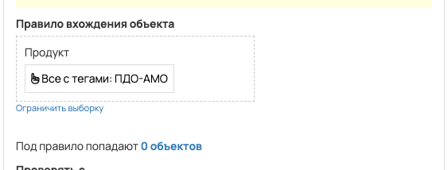
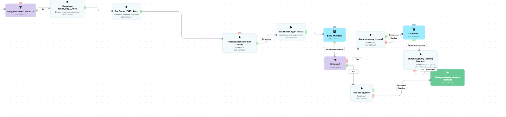

[AMO] [ED] ПДО 101081
- ID процесса:
2469476 - Объект: Заказы
- Статус: Ожидание событий
- Внутренняя страница: 2469476. [AMO] [ED] ПДО 101081
- GetCourse: Карточка | Схема процесса
Скриншоты процесса


Коротко для заказчика
- Главное: В процесс попадают заказы по продуктам с тегом «ПДО-АМО».
- Дальше он передает данные как: Оплаты и заказы.
- Связанных баз Vakas: 1.
Понятное описание процесса
- Процесс работает с объектом GetCourse: Заказы. Текущий статус процесса: Ожидание событий.
- На вход попадают данные так: В процесс попадают заказы по продуктам с тегом «ПДО-АМО».
- Техническое правило входа в GetCourse: Продукт (все с тегами: ПДО-АМО)..
- Дополнительные условия внутри схемы не извлечены: процесс идет напрямую по основной ветке или условия не подписаны.
- Дальше процесс делает прямые вызовы Vakas: 1. Напрямую задействованы базы: 101081.
- Передача: 101081. ПДО: Оплаты и заказы. Передаются параметры:
number,id,order_id,positions,costMoney,leftCostMoney,payedMoney,status,paymentLink,firstNameи другие. - Что происходит в amoCRM: На входе в этап ПДО -> НОВЫЙ ЗАКАЗ [85904438] база ищет дубль и может взять старую сделку только из заранее разрешенных этапов.
Ход процесса в GetCourse
- Схема состоит из 2 блоков и 1 переходов.
- По типам: стартов 1, условий/ожиданий 0, вызовов URL 0, изменений полей 0, финалов 0.
Блоки процесса: что делают и зачем нужны:
- Блок
1«Начало работы» (старт). Что делает: Запускает выполнение схемы для объекта, который попал под правило входа процесса. Зачем нужен: Нужен как точка входа: от него GetCourse начинает движение объекта по схеме. Дальше: если результат «Выполнено», идет в «Вызвать url». - Блок
2«Вызвать url» (операция request). Что делает: Выполняет служебный шаг схемы «Вызвать url». Зачем нужен: Нужен как промежуточный технический шаг в схеме «Вызвать url». Дальше переходов нет: это конечная точка ветки.
Что именно входит в процесс
- В процесс попадают заказы по продуктам с тегом «ПДО-АМО».
- По описанию к этому тегу относятся продукты: «Пассивный доход на облигациях. Лайт» и «Пассивный доход на облигациях. Стандарт».
Как именно настроено правило
- В amoCRM процесс ориентирован на воронки: «ПДО».
- В описании зафиксированы этапы обработки: «Новый заказ в гк - Новый заказ», «ч/о в гк - Новый заказ» и «Оплачено в гк - Новый заказ».
- Название сделки в amo: «Заказ_ПДО_Авто».
- Тег сделки в amo: «Заказ_ПДО_Авто».
Куда и как передается дальше
| База Vakas | Что передается | Этап в amoCRM | Что происходит со сделкой |
|---|---|---|---|
| 101081. ПДО | Оплаты и заказы | ПДО -> НОВЫЙ ЗАКАЗ [85904438] | На входе в этап ПДО -> НОВЫЙ ЗАКАЗ [85904438] база ищет дубль и может взять старую сделку только из заранее разрешенных этапов. |